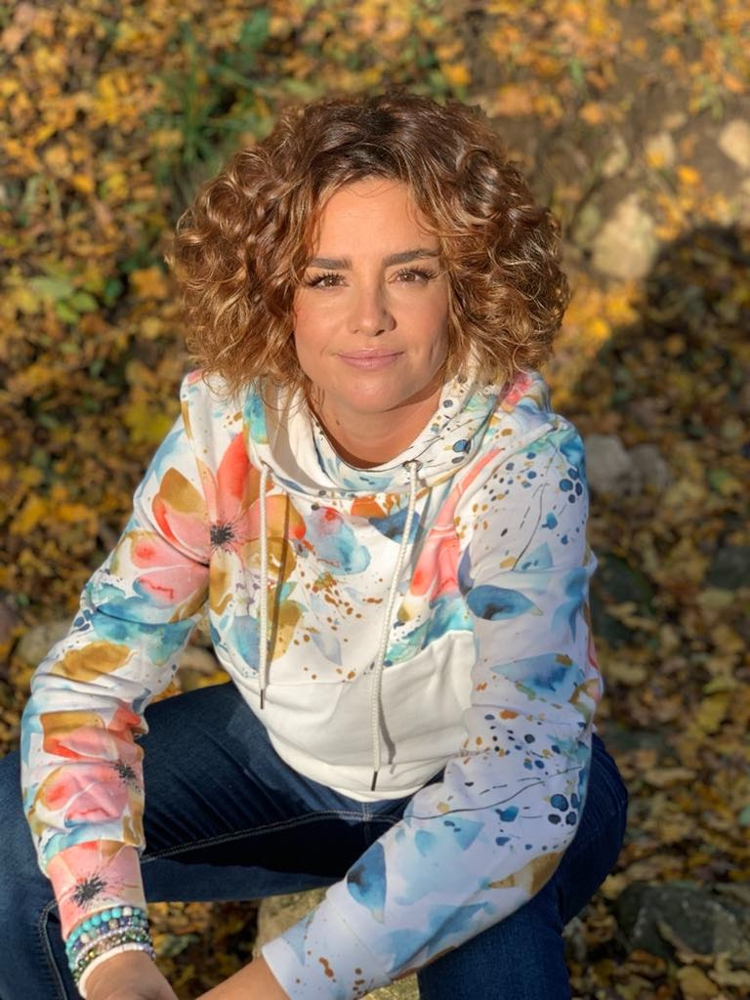

Ki vagyok én?

Kuszkó Anett - Netti vagyok, elsősorban édesanya és feleség, mélyen érző ember, aki pici kora óta érzékeny, nyitott és befogadó az energiákra, melyek körbe ölelik az életünket.
A Szív-Lélek egy hely, ahol önmagad lehetsz, ahol nem kell megfelelned, és kinyithatod lelked azon kapuját, amit talán sosem mutattál meg senkinek.
Nálam biztonságban vagy. Itt teljes figyelmet kap a lélek, ahol a benned rejlő erő is kinyílhat, ahol felismeréseket, megértéseket és válaszokat kapsz önmagaddal kapcsolatban.
Egész életemben arra készültem, hogy megérkezzek ide.
Minden energiámmal segítem a körülöttem lévő lelkek életét. Erre születtem. Zenészként, nőként, pedagógusként, anyaként és segítőként.
Voltak bölcs asszonyok az életemben, akiknek nagyon hálás vagyok a tanításukért és hogy feltétel nélküli szeretetükkel körbe vettek. Senkit sem kapunk véletlenül az életünkben.
Minden okkal történik.
Feltetted már ezt a kérdést magadnak: KI VAGYOK ÉN?
Segítek megtudni.
Hiszek a közösség és a szeretet erejében. Minél többen vagyunk hasonlóan gondolkodók annál több mindenre leszünk képesek együtt. Ha fogjuk egymás kezét, és működik az adok-kapok egyensúlya, akkor megszületnek a csodák bennünk és magunk körül. Mert csodák igenis léteznek.
Hát itt az ideje hogy te is megtaláld magadban a csodát!
Hozd el magadat és a batyudat én segítek belőle kipakolni!
Mert dolgunk van egymással.
A Szív-Lélek egy hely, ahol önmagad lehetsz, ahol nem kell megfelelned, és kinyithatod lelked azon kapuját, amit talán sosem mutattál meg senkinek.
Nálam biztonságban vagy. Itt teljes figyelmet kap a lélek, ahol a benned rejlő erő is kinyílhat, ahol felismeréseket, megértéseket és válaszokat kapsz önmagaddal kapcsolatban.
Egész életemben arra készültem, hogy megérkezzek ide.
Minden energiámmal segítem a körülöttem lévő lelkek életét. Erre születtem. Zenészként, nőként, pedagógusként, anyaként és segítőként.
Voltak bölcs asszonyok az életemben, akiknek nagyon hálás vagyok a tanításukért és hogy feltétel nélküli szeretetükkel körbe vettek. Senkit sem kapunk véletlenül az életünkben.
Minden okkal történik.
Feltetted már ezt a kérdést magadnak: KI VAGYOK ÉN?
Segítek megtudni.
Hiszek a közösség és a szeretet erejében. Minél többen vagyunk hasonlóan gondolkodók annál több mindenre leszünk képesek együtt. Ha fogjuk egymás kezét, és működik az adok-kapok egyensúlya, akkor megszületnek a csodák bennünk és magunk körül. Mert csodák igenis léteznek.
Hát itt az ideje hogy te is megtaláld magadban a csodát!
Hozd el magadat és a batyudat én segítek belőle kipakolni!
Mert dolgunk van egymással.
Végzettségek
Hellinger féle Családállító Képzés
Okleveles SVT Terapeuta
Kokas Zeneterápia - Dr. Kokas Klára komplex művészeti programja, mint pedagógia és terápia
Agykontroll tanfolyam
Pécsi Tudományegyetem Művészeti Kar: Hegedűtanár-kamaraművész diploma
Hozzáállásom
favorite
Érzelmes
Figyelek, befogadok és segítek. A terápia során érzelmek törnek fel, melyek tisztulásthoznak. Jellemzően azonnali változásokat és megoldásokat szeretnénk, mindehhez azonban idő kell. A terápia ennek a keretét adja meg.
self_improvement
Rugalmas
Én alkalmazkodom hozzád, a terápia mindig a te fejlődésedet szolgálja. A legtöbb esetben, az alapprobléma nem az, amivel akliensek megkeresnek. A terápia során jönnek elő a mélyebb gyökérokok.
spa
Holisztikus
A test, a lélek és a szellem összefonódott. Bármelyik területtel is foglalkozunk az kihat a többire. Áldott állapot az, amikor fizikálisan, mentálisan és spirituálisan is egységben érezzük magunkat.
travel_explore
Elemző
Neveltetésünk, a minket körülvevő világ folyamatosan alakította személyiségünket. Jó nagy csomagot cipelünk mindannyian. A terápia folyamán ezektől a súlyoktól megszabadulhatunk, ha felszínre hozzuk, megvizsgáljuk, megértjük és elengedjük azokat.